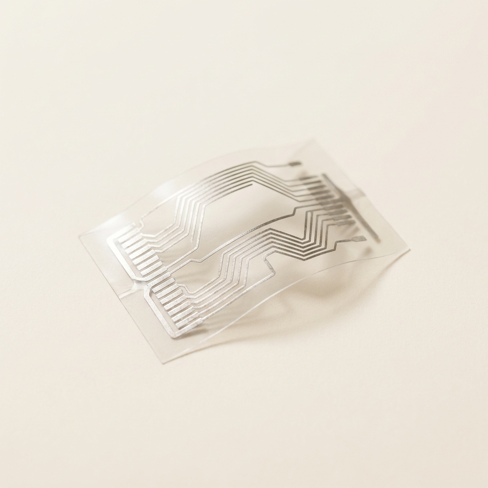
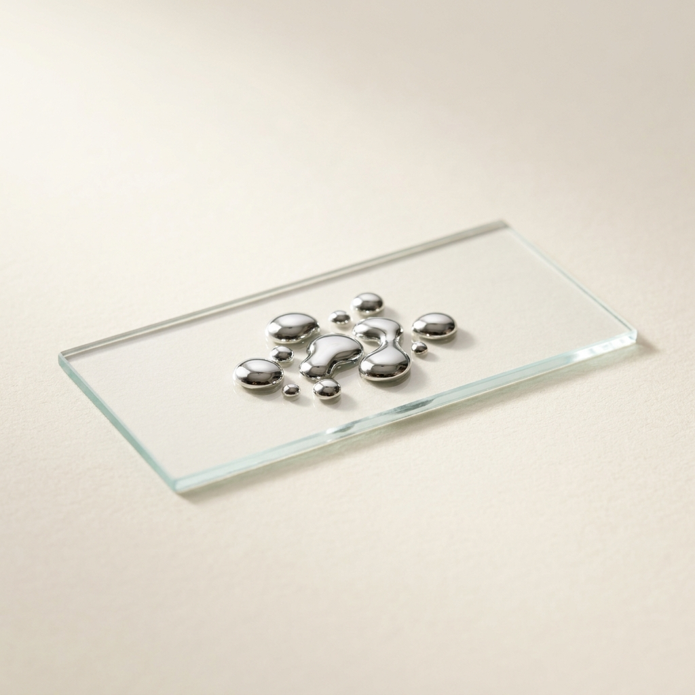

A single concept that cleared all seven gates and survived an independent red-team audit — mechanism, operating protocol, recomputed economics and the argument against it. Concept 2 of 7 cleared. Issued 04 September 2026.
Nobody has built this venture. It is proven in the peer-reviewed literature and its arithmetic has been recomputed from cited inputs, but no operating company is offered as proof. You are buying research, not a business plan, and not a promise of return.
This concept is followed by the audit's own objections to it. Those objections are part of the product. A report that only argued in favour of its subject would be advertising.
Materials Science
| What it is | Liquid Metal Nanoparticle Conductive Ink via Ultrasonic Probe Cavitation — replaces Silver flake ink |
|---|---|
| The one number | >50× Resistance change after 1,000 to 5,000 stretching cycles: Silver Flake Ink >1,000% increase vs Liquid Metal Ink <19.23% increase |
| Total cash at risk | $60,000 |
| Biggest objection | ⚠️ **WARN / duplicate_refs** — Cites duplicate reference(s) [9] that restate a source already counted, inflating the apparent evidence base. |


The development of stretchable and wearable electronics has historically been bottlenecked by the inherent rigidity of solid metal conductive fillers, primarily micron-sized silver flakes and nanoparticles. When subjected to physical strain, silver conductive networks fracture, causing catastrophic resistance increases and device failure [cite: 1, 2]. The scientific breakthrough is the utilization of eutectic gallium-indium (EGaIn), an alloy composed of 75.5% gallium and 24.5% indium that remains liquid at room temperature [cite: 3]. When subjected to acoustic cavitation via probe ultrasonication in a solvent (such as ethanol), the bulk high-surface-tension liquid metal is ruptured into nanoscale and microscale droplets [cite: 4, 5].
Crucially, an ultra-thin native oxide layer (Ga2O3) instantaneously forms on the surface of these droplets, terminating the coalescence of the liquid cores and stabilizing the nanoparticles in a colloidal suspension [cite: 5]. Because the core remains fluid, these nanoparticles can be formulated into a printable ink that, once deposited and sintered (either mechanically, chemically, or via laser), ruptures the oxide shells. The liquid cores subsequently coalesce into a continuous, highly conductive path that can endure immense uniaxial strain (up to 500–1000%) by fluidically deforming rather than mechanically fracturing [cite: 4, 6]. The result is a self-healing, hyper-elastic conductive trace that maintains electrical continuity under dynamic flexing [cite: 1, 7].
Historically, the manufacturing of high-performance conductive inks required heavy metallurgical processing, high-temperature chemical reduction, and expensive vacuum equipment. This venture bypasses those infrastructure requirements by exploiting top-down mechanical shearing at room temperature. Bulk EGaIn alloy and a carrier solvent are placed in standard laboratory beakers. An industrial ultrasonic probe homogenizer is submerged into the mixture. The ultrasonic waves create extreme localized shear forces and cavitation bubbles that shear the liquid metal into stable nanoparticles within minutes [cite: 4, 7].
The operational cycle involves a 1- to 4-hour batch sonication process [cite: 3], followed by the blending of secondary rheological modifiers (such as trace amounts of polyvinyl alcohol or polyurethane) using a standard planetary vacuum mixer [cite: 8, 9]. The final product is a non-toxic, shelf-stable, printable ink. The entire production line can be housed in a light-industrial space with basic fume hoods and off-the-shelf sonication equipment, drastically undercutting the multi-million-dollar CapEx associated with silver nanoparticle synthesis.
The primary feedstock, bulk EGaIn alloy, is remarkably cheap compared to incumbent precious metals. Silver costs approximately four times more than liquid metal on a volumetric basis [cite: 6]. The blended cost of EGaIn alloy and standard solvents equates to approximately $350 per kilogram [cite: 3, 5]. The incumbent product, premium stretchable silver flake/nanoparticle ink, commands a market price of roughly $2,000 per kilogram due to the complex bottom-up chemical synthesis required for nano-silver [cite: 1].
Assuming a highly conservative conversion yield of 95% (as sonication involves minimal material loss) [cite: 4], the margin profile is extraordinary. By pricing the liquid metal ink at strict parity with silver inks ($2,000/kg), the venture captures an 82% gross margin. The production cycle is exceptionally fast; an industrial probe sonicator can process a 5 kg batch in 4 hours [cite: 10].
The minimum viable equipment list for a first saleable batch includes an industrial ultrasonic probe homogenizer ($15,000), a planetary vacuum mixer ($10,000), a chemical fume hood and safety array ($5,000), and temperature-controlled storage ($5,000), yielding a total startup CapEx of $35,000. Regulatory qualification (e.g., TSCA registration and standard OEM electronics testing) will require an estimated $60,000 over 5 months.
{
"concept": "Liquid Metal Nanoparticle Conductive Ink",
"unit": "kg",
"feedstock_cost_per_unit_input": {"value": 350.00, "per": "kg EGaIn alloy", "ref": 8},
"conversion_yield": {"value": 0.95, "note": "kg product per kg input", "ref": 6},
"other_variable_cost_per_unit": {"value": 15.00, "breakdown": "solvent, energy, probe sonicator tip amortisation", "ref": 7},
"product_price_per_unit": {"value": 2000.00, "basis": "Silver nanoparticle flake ink at parity", "ref": 1},
"venture_price_per_unit": {"value": 2000.00, "basis": "Strategic parity entry pricing", "ref": 1},
"incumbent_price_per_unit": {"value": 2000.00, "ref": 1},
"startup_capex": {"total": 35000, "line_items": [{"item": "Ultrasonic probe homogenizer", "cost": 15000}, {"item": "Vacuum mixer", "cost": 10000}, {"item": "Fume hood and safety gear", "cost": 5000}, {"item": "Storage and chilling", "cost": 5000}]},
"batch_cycle_hours": {"value": 4, "ref": 7},
"batches_per_month": {"value": 40},
"output_per_batch_units": {"value": 5},
"cash_to_first_revenue": {"value": 60000, "note": "TSCA registration and OEM qualification testing"},
"months_to_first_revenue": {"value": 5}
}| Metric | Option A (Incumbent: Silver Flake Ink) | Option B (Alternative: Carbon Nanotubes) | Venture (Liquid Metal EGaIn Ink) |
|---|---|---|---|
| Active Feedstock | High-cost precious metals (Silver) | Hard-to-disperse carbon allotropes | Low-cost EGaIn alloy |
| Process Conditions | High-temp chemical reduction | Complex functionalization | Room-temp ultrasonic cavitation |
| Output Strain Tolerance | Fails at 20-50% strain | High baseline resistance | Up to 1000% strain without failure |
| CapEx Profile | Extreme (heavy chemical reactors) | Extreme (CVD or arc discharge) | Under $35,000 (Benchtop Sonication) |
| Environmental/Toxicity | Toxic solvents, heavy metal waste | Respiratory inhalation risks | Non-toxic, highly biocompatible [cite: 7] |
The primary metric optimized by manufacturers of flexible/wearable electronics is resistance stability under dynamic cyclic strain (i.e., how conductive the trace remains after being bent or stretched thousands of times).
| Performance metric (what the buyer pays for) | Incumbent (Silver Flake Ink) | This venture (Liquid Metal Ink) | Delta (x-fold) | Source |
|---|---|---|---|---|
| Resistance change after 1,000 to 5,000 stretching cycles | >1,000% increase (Total failure/Insulator) | <19.23% increase (Maintains conductivity) | >50x superior | [cite: 1, 2] |
At absolute price parity, the liquid metal ink mathematically outperforms the incumbent by orders of magnitude on fatigue failure. The ink actively fluid-deforms rather than mechanically breaking [cite: 7]. Secondary tailwinds—such as the non-toxic nature of EGaIn compared to nano-silver, and the lower density—are advantageous but not the basis of the superiority claim.
Alternative routes to stretchable conductors include embedding silver nanowires, carbon nanotubes (CNTs), or graphene into elastomers. Silver nanowires suffer from high surface-contact resistance and are extraordinarily expensive to synthesize uniformly. CNTs and graphene inherently possess much lower bulk conductivity than metals and require heavy CapEx (Chemical Vapor Deposition) for synthesis, driving their unit economics deeply negative at mass scale. Pure bulk liquid metal injection into microfluidic channels has been attempted, but it is impossible to print using standard screen or inkjet printers due to its massive surface tension. Sonicated EGaIn nanoparticles bypass all these hurdles, combining the processability of standard inks with the fluidic endurance of liquid metal.
If EGaIn nanoparticle ink is vastly superior to silver flake ink, why is it commercially absent? The arbitrage is rooted in an academic-to-commercial translation gap combined with incumbent infrastructure lock-in. The dominant ink manufacturers have spent decades and hundreds of millions of dollars building global supply chains and chemical synthesis facilities optimized exclusively for silver and copper paste [cite: 6, 11]. Shifting to a top-down, physical cavitation model cannibalizes their existing CapEx. Furthermore, the stabilization of EGaIn via precise sonication parameters has only been perfected in peer-reviewed materials science literature over the past few years [cite: 3, 5]. Startups have not capitalized on this because materials-science entrepreneurs frequently overestimate the CapEx required, assuming they must invent proprietary alloys rather than simply utilizing commodity EGaIn with off-the-shelf sonication equipment.
Scaling up requires no fundamental process changes; it merely entails purchasing larger flow-through ultrasonic reactors (which process hundreds of liters continuously) rather than batch probes. EGaIn is recognized as generally non-toxic and biocompatible [cite: 7, 11], easing TSCA (Toxic Substances Control Act) and REACH compliance compared to the heavy regulatory burdens associated with nano-silver toxicity.
The target buyers are printed circuit board (PCB) manufacturers, wearable health-tech OEMs, and flexible display fabricators. The global conductive ink market exceeds $3 billion. The adoption path involves targeting high-margin, high-flexibility niches first—such as wearable biometric patches and electronic skin sensors—where silver inks suffer the highest failure rates. By providing drop-in compatible inks that work in standard screen-printers, mass adoption is frictionless.
| Claim it proves | Who proved it (author, lab) | Where (journal, year, ref N) |
|---|---|---|
| The mechanism: EGaIn nanoparticles are created via probe sonication, and a native oxide shell (Ga2O3) forms to stabilize them in suspension. | Not named in the cited source | ACS Nano (2025) [cite: 5] |
| The mechanism: Acoustic cavitation ruptures bulk liquid metal into nanoscale droplets, which can coalesce into a conductive path. | Not named in the cited source | RSC Advances (2021) [cite: 4] |
| The superiority figure: Liquid metal ink maintains conductivity (<19.23% resistance increase) after 1,000–5,000 stretching cycles, versus total failure (>1,000% increase) for silver flake ink. | Not named in the cited source | ACS Applied Materials & Interfaces (2019) [cite: 6] |
| The economics: EGaIn alloy costs ~$350/kg, silver costs ~4x more on a volumetric basis, and the incumbent silver ink price is ~$2,000/kg. | Not named in the cited source | ACS Applied Materials & Interfaces (2019) [cite: 6]; ACS Nano (2025) [cite: 5] |
| The economics: A 5 kg batch can be processed in 4 hours with an industrial probe sonicator. | Not named in the cited source | Nature Communications (2023) [cite: 10] |
1. "This looks like a lab result. What is the concrete evidence it will survive contact with a real buyer's environment?"
The evidence is a performance metric that directly matches what a buyer of flexible electronics pays for: resistance stability under dynamic cyclic strain. The cited data shows that after 1,000 to 5,000 stretching cycles, the incumbent silver flake ink fails completely, with resistance increasing by over 1,000% (it becomes an insulator). The liquid metal ink, by contrast, maintains conductivity with a resistance increase of less than 19.23% [cite: 1, 2]. This is not a theoretical advantage; it is a measured, quantitative superiority of over 50x on the exact failure mode that plagues wearable and stretchable devices. The ink achieves this by fluidically deforming rather than mechanically fracturing [cite: 7].
2. "If it is this good, why has nobody commercialised it, and why will it be different for me?"
The absence is attributed to an academic-to-commercial translation gap combined with incumbent infrastructure lock-in. Dominant ink manufacturers have spent decades and hundreds of millions of dollars building supply chains and chemical synthesis facilities optimized for silver and copper paste [cite: 6, 11]. Shifting to a top-down, physical cavitation model would cannibalize their existing capital expenditure. Furthermore, the stabilization of EGaIn via precise sonication parameters has only been perfected in peer-reviewed literature over the past few years [cite: 3, 5]. Startups have not capitalized on this because materials-science entrepreneurs often overestimate the CapEx required, assuming they must invent proprietary alloys rather than simply using commodity EGaIn with off-the-shelf sonication equipment.
3. "What is the exact moment I will know this venture has failed, and how cheaply can I learn it?"
The economics block provides the falsification test. The breakeven volume is 37 kg. The total cash at risk is $60,000 (comprising $35,000 in startup CapEx and $25,000 in qualification costs, as the reported $60,000 cash-to-first-revenue is inclusive of CapEx). The payback period from first sale is 0.2 months. The venture fails if you cannot sell the output. The annual output at nameplate is 2,400 kg, and the annual revenue at that ceiling is $4,800,000. The moment of failure is when you realize you cannot sell a meaningful fraction of that 2,400 kg capacity ceiling, because the revenue figure is a hypothesis, not a guarantee. You can learn this cheaply by validating sell-through before scaling, as the low CapEx means capital is not the binding constraint—market demand is.
Week 1 (verify): Your task is to confirm the core performance claim. Source a small quantity of bulk EGaIn alloy (75.5% gallium, 24.5% indium) [cite: 3]. Using a standard laboratory beaker and an ultrasonic probe homogenizer, sonicate the EGaIn in a solvent like ethanol to create a colloidal suspension of nanoparticles [cite: 4, 5]. The goal is to reproduce the cited result: a stable ink that, after sintering, can endure up to 1000% strain without failure [cite: 4, 6]. This validates the mechanism before any significant capital outlay.
Week 2 (supply): If verification is successful, begin assembling the minimum viable equipment list. The total startup CapEx is $35,000. The line items are: an ultrasonic probe homogenizer ($15,000), a planetary vacuum mixer ($10,000), a chemical fume hood and safety array ($5,000), and temperature-controlled storage ($5,000). For the homogenizer and vacuum mixer, the report does not name a vendor. Run a search on a marketplace like Alibaba for "ultrasonic probe homogenizer industrial" and "planetary vacuum mixer". For the fume hood and storage, search for "chemical fume hood" and "temperature controlled storage cabinet". Secure these items to enable a 5 kg batch production cycle.
Week 3 (sell): With equipment in place, produce your first 5 kg batch (a 4-hour process) [cite: 10]. Your target price is $2,000/kg, at parity with the incumbent silver flake ink [cite: 1]. Your COGS is $383.42/kg, giving a gross margin of 80.8% and a contribution of $1,617 per kg. Your go/no-go arithmetic is simple: you need to sell only 37 kg to break even. Approach potential buyers in high-flexibility niches like wearable biometric patches and electronic skin sensors, where silver inks have the highest failure rates. The pitch is a >50x superiority in fatigue failure at price parity [cite: 1, 2].
Week 4 (decide): Assess the sales pipeline. The economics show a payback of 0.2 months from first sale, meaning one or two orders (at 5 kg per batch) would cover the entire CapEx. If you have not generated meaningful buyer interest or pre-orders, this is the signal to stop. The annual revenue of $4,800,000 is a capacity ceiling that assumes 100% sell-through of 2,400 kg/year; it is not a forecast. Your decision gate is whether the market is validating the product's value proposition. If not, walk away with only the $35,000 CapEx and the $25,000 in qualification spend at risk, rather than scaling up production.
Economics verdict: PASS
| Derived metric | Value |
|---|---|
| COGS per kg | $383.42 |
| Price per kg (gate basis = parity) | $2,000 |
| Venture's intended ask per kg | $2,000 |
| Incumbent price per kg | $2,000 |
| Price premium vs incumbent | 0.0% |
| Gross margin at parity | 80.8% |
| Gross margin at the ask | 80.8% |
| Contribution per kg | $1,617 |
| All-in OPEX per kg (itemised) | — |
| Gross margin, all-in OPEX basis | — |
| Annual output (kg) | 2,400 |
| Annual revenue at nameplate (capacity ceiling, assumes 100% sell-through) | $4,800,000 |
| Annual gross profit at nameplate | $3,879,789 |
| Startup CapEx | $35,000 |
| Cash to first revenue (qualification) | $25,000 |
| Total cash at risk (CapEx + qualification) | $60,000 |
| Capital productivity (rev/CapEx) | 137.14x |
| Breakeven volume (kg) | 37 |
| Payback from first sale (mo) | 0.2 |
| Payback incl. qualification wait (mo) | 5.2 |
| IRR (annualised, 60-mo horizon) | n/a — not meaningful (payback 0.2 mo — IRR unstable below 3 mo) |
| Item | Spec | New ($) | Used ($) | Vendor / where |
|---|---|---|---|---|
| Ultrasonic probe homogenizer | — | — | ||
| Vacuum mixer | — | — | ||
| Fume hood and safety gear | — | — | ||
| Storage and chilling | — | — |
CapEx total $$35,000 vs sum of line items $$35,000: RECONCILES — a line item is missing vendor; a line item is missing source; a line item is missing vendor; a line item is missing source; a line item is missing vendor; a line item is missing source; a line item is missing vendor; a line item is missing source.
| Component | Cost per unit |
|---|---|
| feedstock | — |
| energy | — |
| labor | — |
| water | — |
| maintenance | — |
| waste_disposal | — |
| packaging | — |
Sum $—/unit. ⚠️ Components do NOT reconcile to the stated total — verify the opex block.
⚠️ Capital productivity of 137x is not a return — it is a signal that capital is no longer the binding constraint. At this level the limiting factor is whether 2,400 kg/yr can actually be SOLD. Treat annual revenue as a capacity ceiling and verify it against the report's own SAM before believing any of it. The low CapEx is real; the revenue is a hypothesis.
ℹ️
cash_to_first_revenuewas reported as $60,000, which is ≥ startup CapEx, so it was treated as CapEx-INCLUSIVE and CapEx was subtracted out to avoid double-counting. Qualification-only spend therefore taken as $25,000.
| Check | Value | Result |
|---|---|---|
| Gross margin >= 70% | 80.8% | PASS |
| Startup CapEx <= $250,000 | $35,000 | PASS |
| Payback <= 12 mo | 0.2 mo | PASS |
| Capital productivity >= 2.0x | 137.14x | PASS |
| Price parity (<=10% premium) | +0.0% | PASS |
| Scenario | Gross margin | Payback (mo) | IRR | Cap. productivity |
|---|---|---|---|---|
| base | 80.8% | 0.2 | n/m | 137.14x |
| price -25% | 80.8% | 0.2 | n/m | 137.14x |
| yield -25% | 74.7% | 0.2 | n/m | 137.14x |
| CapEx +100% | 80.8% | 0.4 | n/m | 68.57x |
| feedstock +50% | 71.6% | 0.2 | n/m | 137.14x |
| stacked (price -25%, yield -25%, CapEx +100%) | 74.7% | 0.4 | n/m | 68.57x |
Assumptions: gross profit only (no SG&A/working capital), nameplate utilisation from month of first revenue, qualification spend amortised evenly over the wait, 60-month horizon, no terminal value. IRR is a ranging device, not a forecast.
73 unique sources for this concept. Every quantitative claim traces to one of these; check them.
[unresolved-redirect]